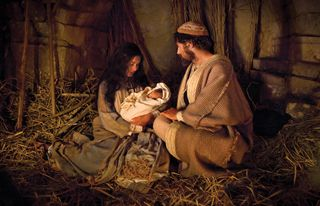
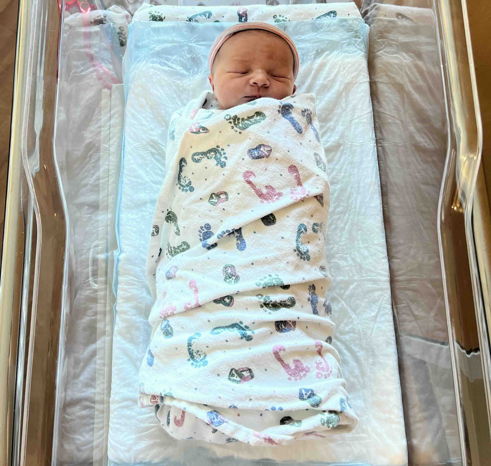
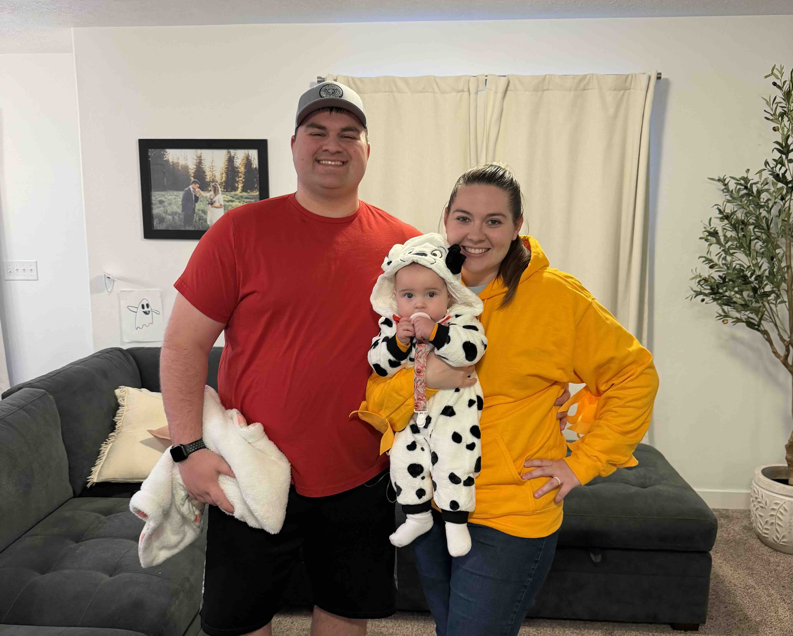
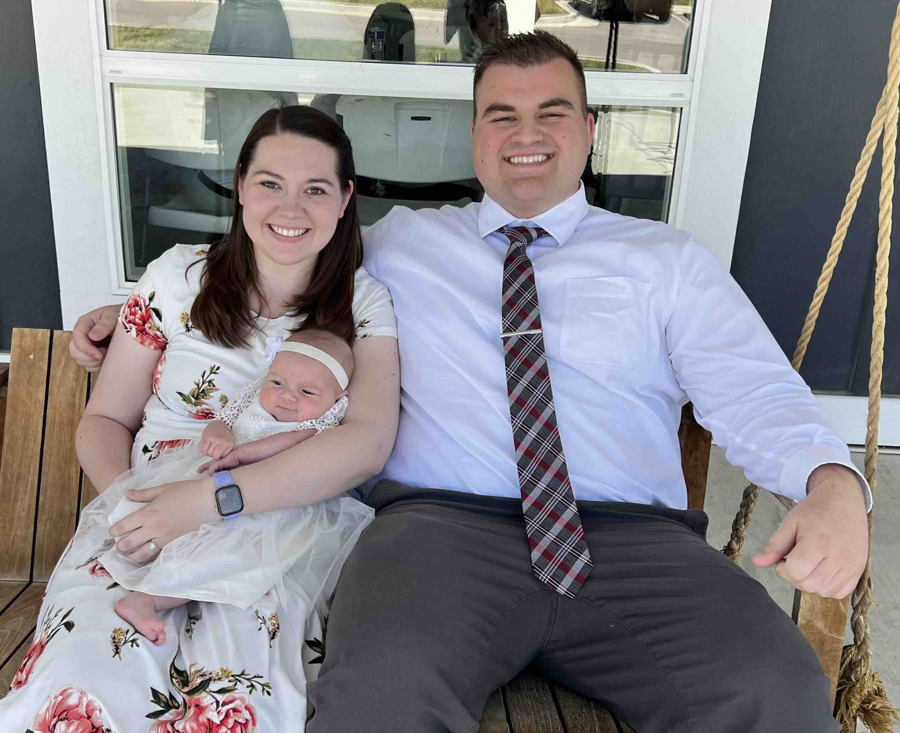

 Wishing you and your family a wonderful holiday season filled with warmth, love, and rejoicing in the birth of our Savior. May the joy of Christmas fill your heart and bring you peace and happiness.
This has been the most joyful year yet with the birth of our daughter, Emma! Emma was born on March 24th at the Riverton Hospital.
Emma is the greatest blessing in our lives. She is so curious about everything and is growing so fast. She has eight teeth and can crawl everywhere. She also likes to stand and walk along furniture. She does have brief moments where she can balance by herself. We think she’ll figure out walking by herself pretty soon. Emma loves the Snoopy screensaver on the living room Apple TV. Therefore, we’ve watched all of the Charlie Brown shows and Snoopy shows on Apple TV Plus. For Halloween, Emma dressed up as Snoopy, Kimberly was Woodstock, and Eric was Linus.
Kimberly has quit her job for the time being to raise Emma. Kimberly is a remarkable mother. (Eric is writing this so he can brag!) She does so much every day to keep Emma happy and healthy. Kimberly regularly takes Emma to Thanksgiving Point, which is a large complex in Lehi, Utah, focused on education and family fun. Emma loves being outside! We love taking family walks around the neighborhood.
Eric still loves working at Vivint. He has a good team and management. Eric recently acquired a blade server computer and loves tinkering with it. Eric was able to take 6 weeks of paid paternity leave when Emma was born. Eric loves being a dad! He and Emma love babbling to each other and playing with her toys.
Eric blessed Emma on June 1st. Eric’s cousin lives in the same ward, and she had her baby two days before Emma. So the babies had their blessings on the same day, and tons of family came to be a part of it. It was so lovely to feel the love and support from our family.
We’ve traveled around Utah to Bear Lake and St. George. Emma did so great on these trips! We love all of the time we get to spend with our family. We also take weekly trips to the Salt Lake Valley to visit with Eric’s parents on Saturdays and Kimberly’s parents on Sundays. Emma loves all of her grandparents and cousins!
We are as involved as ever in our ward right now. We have so many great friends and neighbors. We had a successful Stake Trek this summer. Although we didn’t go, we helped with the planning and transportation. Kimberly is still loving being the Music Coordinator in our ward. She is especially instrumental in organizing the Easter and Christmas programs. Eric was called to work with the young men in the ward earlier this year. He loves getting to know the youth and mentoring and building them up. In November, Eric was called to be a Second Counselor in the Bishopric, and consequently, ordained a High Priest. Things have been much busier since the new calling!
We hope you all have a wonderful Christmas season. We look forward to new adventures in 2026.